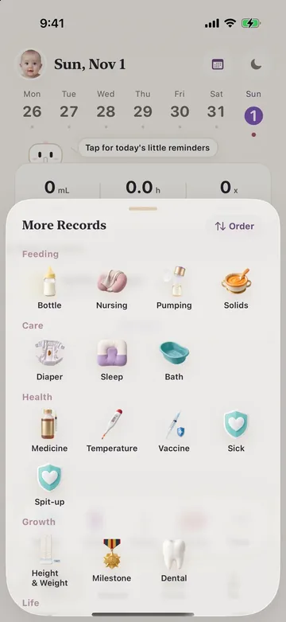
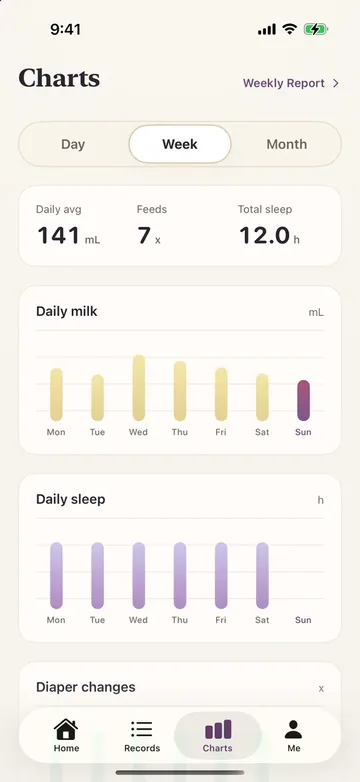
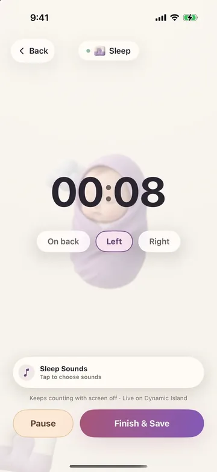

Feeding & timersBottles, nursing, pumping, and solids remember your usual amounts and last entry.
Quick logging
Care for the baby first, then the records
Frequent actions sit on the Home screen by your baby’s stage. The timeline, daily summary, and charts handle the complexity.

Sleep & routinesNaps, night sleep, baths, and daily care open the right form in one tap.
Diapers & healthCapture diaper state, spit-up, temperature, medicine, symptoms, and doctor visits.
Reminders & CalendarNext feed, long naps, and vaccine tasks can write to the system Calendar.
Family collaboration
One timeline for the whole family
Family Annual is not a shared album. It is full collaboration: one caregiver logs a feed, another adds a diaper change, and grandparents can help after being invited.
- Up to 6 members share one family space
- The timeline shows who made each entry
- Members join free; Family Annual includes Plus
- Existing records follow the data rules if someone leaves
Long-term insight
Understand today and remember the month


Reminders ecosystem
Let reminders carry the mental load
Feeds, naps, warming, and vaccine tasks can reach notifications, Calendar, and Live Activity. Even with the phone locked, the next step is visible.
- Next-feed countdown
- Sleep and warming timers
- Vaccine and checkup tasks
- Home Screen and Lock Screen widgets
Privacy boundaries
Clear data boundaries
Local firstBaby records stay on your device by default; there is no BabyOneDay central family database.
iCloud family sharingFamily data uses the owner’s iCloud CloudKit—not our servers.
Restrained permissionsPhotos, reminders, and Calendar are used only for features you enable.
Anonymous third-party analytics can be turned off; mainland-China builds do not initialize third-party analytics by default. BabyOneDay is not a medical device. Seek immediate care for urgent symptoms.
Plans
Start free, upgrade when you need more
- Daily records
- Today summary
- iCloud backup
- Charts & full history
- Reports & export
- All sounds
- Advanced widgets
- Up to 6 people
- One timeline
- Plus for members
Final prices follow the App Store in your region. Plus Lifetime is a one-time purchase at $49.99.
Start tonight with a clearer baby day.
Begin free; add family collaboration and long-term insight when you need them.